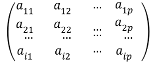
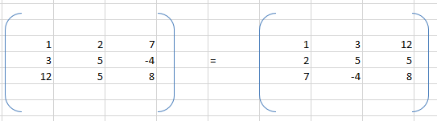
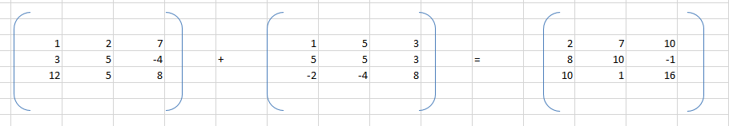
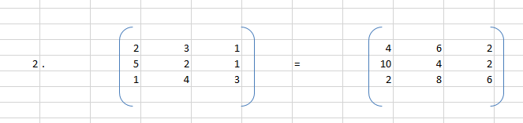
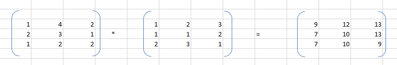
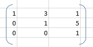
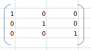
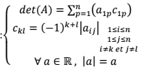

On note Mn,p l'ensembles des matrices n lignes et p colonnes.
Soit une matrice A ∈ Mn,p , on appelle transposée de A et on note tA.
Remarque: Transposer une matrice revient à échanger lignes et colonnes
Soit A et B ∈ Mn,p , on appelle somme des matrices A et B et on note A+B la matrice S ∈ Mn,p telle que Sij=Aij+Bij.
Remarque: On ne peut additionner que des matrices de même dimension.
Soit A ∈ Mn,p et k ∈ R, on note k.A.
Soit A ∈ Mn,p et B ∈ Mn,p , on appelle produit matriciel de A par B et note A*B.
Remarque:
i) Pour multiplier 2 matrice, le nombre de colonne de celle de gauche est égal nombre de ligne de celle de droite.
ii) Le produit possède alors le même nombre de ligne de celle de gauche et le même nombre de colonne de celle de droite.
L'ensemble Mn,p est noté par la suite Mn;ses éléments sont appelés matrices carrées car ayant le même nombre de lignes que de colonnes.
Soit A ∈ Mn
A est une matrice triangulaire inférieure ⇔ ∀ i;j ∈ 1,n, i < j ⇒ Aij=0;
A est une matrice triangulaire supérieure ⇔ ∀ i;j ∈ 1,n, i > j ⇒ Aij=0;
A est une matrice diagonale ⇔ ∀ i;j ∈ 1;n , i ≠ j ⇒ Aij=0;

A est une matrice symétrique ⇔ A = tA.
On note In et on appelle matrice identité la matrice Mn.

Le déterminant de la matrice A, noté det(A) ou encore |Aij| et le cofacteur de Akl, noté ici Ckl sont deux nombres réels définis par:

La matrice des cofacteurs est appelée comatrice de A.
On dit que la matrice A est inversible si et seulement si il existe B &isin Mn , A*B=B*A=In.
B est alors appelée matrice inverse de A et notée A-1.
Remarque: On peut calculer le déterminant selon n'importe quelle ligne ou colonne.
A est inversible ⇔ det(A) ≠ 0 Si A est inversible alors A-1=(1/det(A))*tcom(A)
On note Lk ↔ Ll l'opération qui consiste à échanger la k ligne avec la l ligne.
On note Lk ← λLk avec λ ≠ 0 l'opération consistant à multiplier la k ligne par lambda.
On note Lk ← Lk+λLl avec λ ≠ 0 l'opération qui consiste à ajouter lambda fois la l ligne à k.
Quand on effectue une opération sur la matrice A, on doit l'effectuer aussi transformer la matrice inverse.
Ces opérations ne changent pas la nature d'une matrice.
Remarque: On peut évidemmen définir les mêmes opérations sur les colonnes.
Si A est inversible, on lui applique des opérations élémentaires jusqu'à obtenir la matrice In et on applique
simultanément les mêmes opérations à la matrice In.
La transformée de In est alors la matrice inverse de A.
| 1 0 0 2 1 0 0 2 1 |
1 0 0 0 1 0 0 0 1 |
| 1 0 0 0 1 0 0 2 1 |
1 0 0 -2 1 0 0 0 1 |
| 1 0 0 0 1 0 0 0 -1 |
1 0 0 -2 1 0 4 -2 1 |
| 1 0 0 0 1 0 0 0 1 |
1 0 0 -2 1 0 -4 2 -1 |
Si A n'est pas inversible, une transformée de A par ces opérations sera triangulaire avec un éléments diagonal nul,donc de déterminant nul.
Pivot: on peut par exemple transformer A en une matrice triangulaire supérieure, condition que toute colonne possède un élément non nul pendant cette transformation: on normalise le pivot puis on créer des 0.